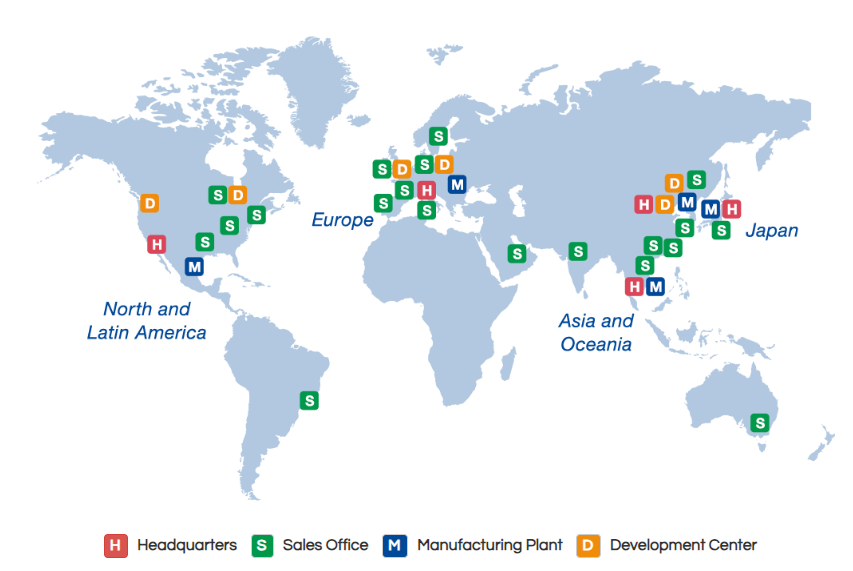

About Alpine

알파인의 역사
알파인 사운드 철학
알파인 ID
알파인 ID는 사운드 이미징을 통해 이상적인 청취 경험을 달성하려는 알파인의 철학입니다. 완벽한 사운드 무대를 만들기 위해 알파인은 스튜디오 녹음 세션에서 사용자가 각 악기와 보컬의 위치를 인식하고, 이를 통해 청취자가 의도한 대로 음악을 경험할 수 있도록 하는 엔지니어링 최적화된 시스템 구성 요소에 중점을 둡니다. 차량의 환경은 사실적인 사운드 스테이지를 경험하는 것을 어렵게 만듭니다. 알파인 ID는 다음과 같은 부분에 중점을 두고 차량 내 사운드 성능에 대한 새로운 벤치마크를 만들어 이러한 문제를 해결합니다.
앰프 위상 이동 및 감쇠 계수
위상 이동은 사운드 주파수의 도달 시간에 영향을 미쳐 부자연스러운 사운드 스테이지를 만듭니다. 알파인 ID 신제품은 왜곡을 방지하기 위해 스피커의 최대 전기 제어를 위한 전례 없는 높은 감쇠 계수를 갖추고 있으며 이상적인 영상 촬영을 위해 최소한의 위상 이동을 제공합니다.
스피커 디테일과 역학
위상 이동은 사운드 주파수의 도달 시간에 영향을 미쳐 부자연스러운 사운드 스테이지를 만듭니다. 알파인 ID 신제품은 왜곡을 방지하기 위해 스피커의 최대 전기 제어를 위한 전례 없는 높은 감쇠 계수를 갖추고 있으며 이상적인 영상 촬영을 위해 최소한의 위상 이동을 제공합니다.
서브우퍼 로컬화
THD(전체 고조파 왜곡)가 높은 서브우퍼는 차량에서 현지화하기 쉬워 영상 촬영이 제대로 되지 않습니다. 출력을 높이면서도 THD를 줄이고 과도 응답을 극대화하기 위해 새로운 서브우퍼는 전체 전력 범위에서 제어 기능을 높였습니다.
증폭기, 스피커 및 서브우퍼로 구성된 알파인의 최고급 X-시리즈는 알파인 ID 사양을 충족하도록 재설계된 첫 번째 제품입니다. 이 제품들은 처음부터 제작되었으며 최상의 사운드 이미징을 달성하기 위해 함께 사용하도록 설계되었습니다. 알파인의 R-시리즈 및 S-시리즈 제품은 향후 몇 년 동안 알파인 ID 사양으로 재건될 것이므로 세 시리즈의 제품 모두 최종적으로 분명히 알파인으로 식별된 사운드 이미징 DNA를 갖게 될 것입니다.